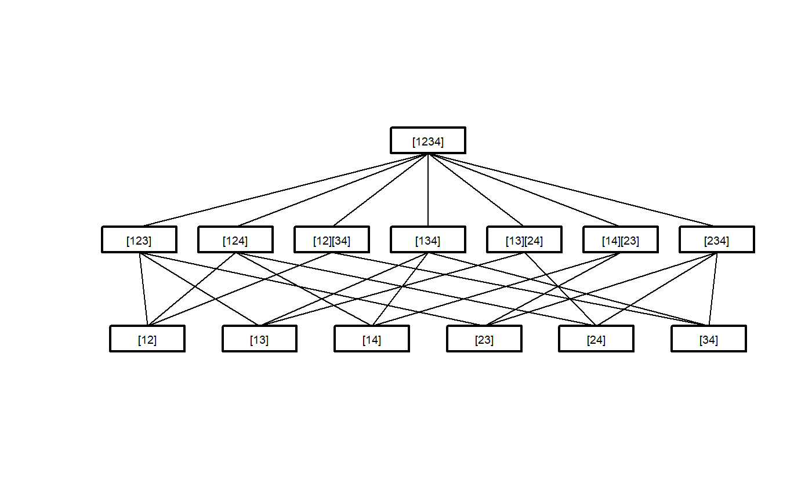
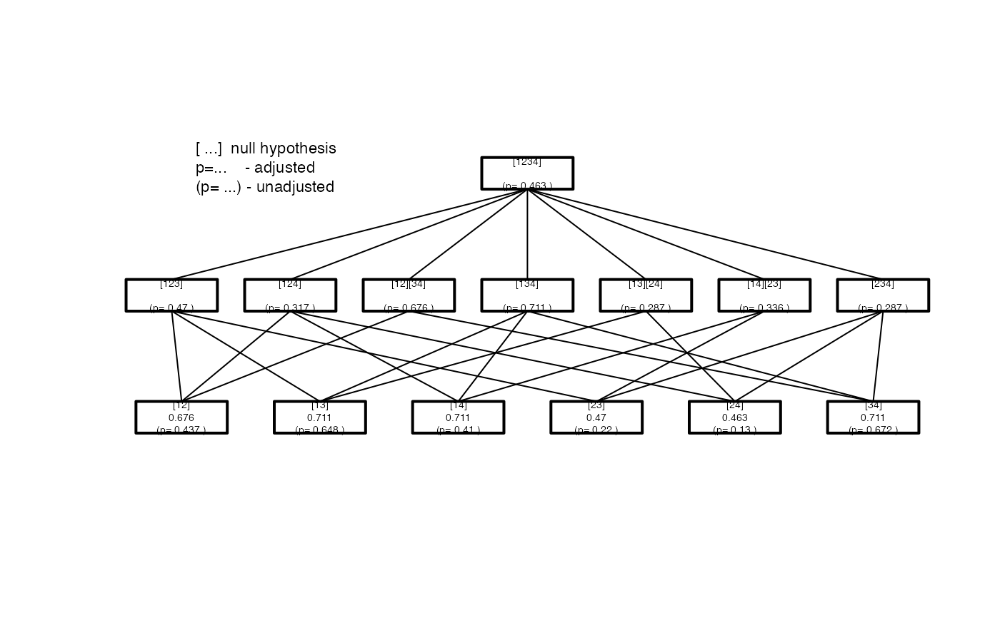

Adjust_raw.RdFunction that adjusts the raw p-values of a closed testing procedure. The raw p-values are adjusted according to the closure principle. The adjusted p-value is calculated as the maximum of the raw p-value from the current hypothesis in question and the raw p-values from all subsequent hypotheses that contain the current hypothesis.
Adjust_raw( ctp.struc, p.value, dataset.name = NULL, factor.name = NULL, factor.levels = NULL, model = NULL, test.name = NULL )
| ctp.struc | Object generated by |
|---|---|
| p.value | Vector of raw p-values in the order of the hypotheses created by |
| dataset.name | Character string naming the analysis dataset (optional - only for documentation purposes). |
| factor.name | Character string naming the factor whose levels are compared (optional - only for documentation purposes). |
| factor.levels | Vector of type "character" containing the levels of the treatment factor (optional - only for documentation purposes). |
| model | Model used in the analysis (optional - only for documentation purposes). |
| test.name | Character string naming the statistical test applied. |
An object of oldClass = "ctp" to be used for summarizing and plotting the results.
Pairwise <- IntersectHypotheses(list(c(1,2), c(1,3), c(1,4), c(2,3), c(2,4), c(3,4))) Display(Pairwise)summary(Pairwise)#> #> Hypotheses to be tested #> ======================= #> #> hyp.no level hypothesis.name #> 1 1 [12] #> 2 1 [13] #> 3 1 [14] #> 4 1 [23] #> 5 1 [24] #> 6 1 [34] #> 1 2 [123] #> 2 2 [124] #> 3 2 [12][34] #> 4 2 [134] #> 5 2 [13][24] #> 6 2 [14][23] #> 7 2 [234] #> 1 3 [1234] #> #> Connection structure of the hypotheses #> ====================================== #> #> Level Connection #> 1 [12] -> [123] #> 1 [12] -> [124] #> 1 [12] -> [12][34] #> 1 [13] -> [123] #> 1 [13] -> [134] #> 1 [13] -> [13][24] #> 1 [14] -> [124] #> 1 [14] -> [134] #> 1 [14] -> [14][23] #> 1 [23] -> [123] #> 1 [23] -> [14][23] #> 1 [23] -> [234] #> 1 [24] -> [124] #> 1 [24] -> [13][24] #> 1 [24] -> [234] #> 1 [34] -> [12][34] #> 1 [34] -> [134] #> 1 [34] -> [234] #> 2 [12][34] -> [1234] #> 2 [123] -> [1234] #> 2 [124] -> [1234] #> 2 [13][24] -> [1234] #> 2 [134] -> [1234] #> 2 [14][23] -> [1234] #> 2 [234] -> [1234]# the vector of p-values calculated by another software p.val <- c( 0.4374, 0.6485, 0.4103, 0.2203, 0.1302, 0.6725, 0.4704, 0.3173, 0.6762, 0.7112, 0.2866, 0.3362, 0.2871, 0.4633) result <- Adjust_raw(ctp.struc=Pairwise, p.value=p.val) ## details may be documented result <- Adjust_raw(Pairwise, p.value=p.val ,dataset.name="my Data", factor.name="Factor" ,factor.levels=c("A","B","C","D"), model=y~Factor ,test.name="my Test") summary(result)#> #> Summary of Closed Testing Procedure #> =================================== #> #> Model : y ~ Factor , test : my Test #> #> Factor levels: 1=A, 2=B, 3=C, 4=D #> #> Elementary Hypotheses and p-values #> ---------------------------------- #> #> Hypothesis raw p-value adj. p-value #> [12] 0.4374 0.6762 #> [13] 0.6485 0.7112 #> [14] 0.4103 0.7112 #> [23] 0.2203 0.4704 #> [24] 0.1302 0.4633 #> [34] 0.6725 0.7112Display(result)